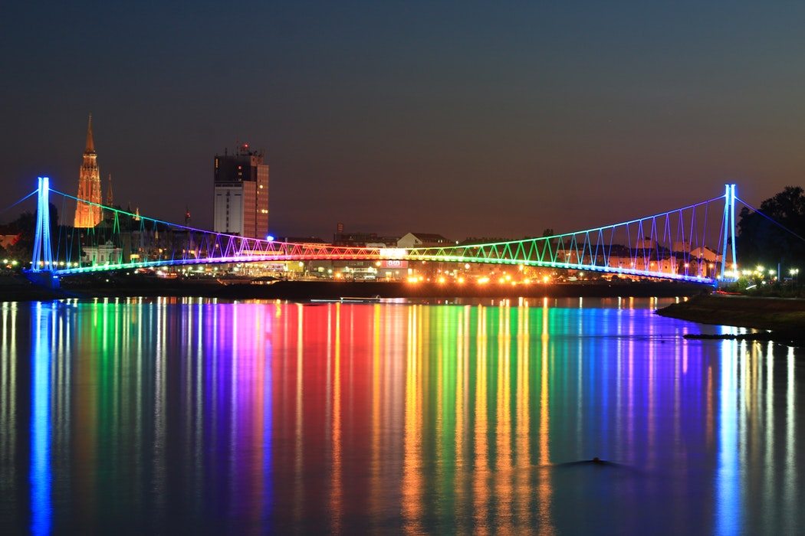

Osijek je četvrti po veličini grad u Hrvatskoj s ukupnom populacijom od oko 100 tisuća
stanovnika. Grad se nalazi na istoku zemlje na desnoj obali rijeke Drave. Njegova povijest
seže još od antičkog doba kada je utemeljena Mursa, jedna od rimskih kolonija. Zbog svoje
strateške pozicije, odnosno blizini susjednih zemalja, razne su kulture ostavile svoj trag što se
može primijetiti kako po arhitekturi tako i po životnim navikama, tradicijom i običajima koji
se njeguju. Osim blizine susjednih zemalja, Osijek se nalazi u neposrednoj blizini
nezaobilaznog Parka prirode Kopački rit koji je zbog svoje šarolike flore i faune proglašen
europskom Amazonom. Grad se diči svojim intelektualnim bogatstvom kao dom Sveučilišta
Josipa Jurja Strossmayera, te dom dvaju nobelovaca – Lavoslava Ružičke i Vladimira Preloga.
Ova dva intelektualca nisu jedine poznate osobe rođene u Osijeku. Branko Lustig,
hollywoodski producent i dobitnik dva Oskara, i Julije Knifer, apstraktni slikar, također su
rođeni u Osijeku. Grad sve više privlači mlade zahvaljujući Sveučilištu i rastućoj softverskoj
sceni, pa ga neki od milja zovu i hrvatska Silicijska dolina. Osijek se smatra i gradom
biciklizma te je svake godine domaćin Pannonian Challenge-a, festivala ekstremnog sporta i
glazbe. Više informacija o našem gradu možete pronaći na mrežnim stranicama Turističke
zajednice Grada Osijeka.